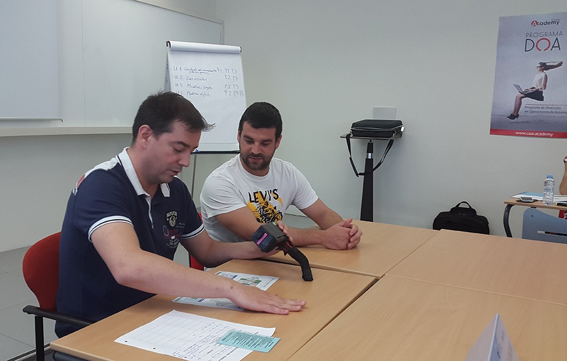

- Job Instructions
- Agilizar las incorporaciones de los trabajadores nuevos.
- Reducir el desperdicio, los rechazos y los retrabajos (mejora de calidad).
- Reducir los daños a la maquinaria y a las herramientas.
- Job Relations
- Las bases para las buenas relaciones en el trabajo.
- Ganarse la lealtad y la cooperación de los trabajadores.
- Prevenir los conflictos.
- Job Methods
- Dividir el trabajo en operaciones.
- Cuestionar cada detalle de forma sistemática para generar ideas de mejora.
- Presentar sus propuestas de mejora de manera concisa y clara a la dirección
Se les enseña a los participantes a formar siguiendo un método estructurado, para que los trabajadores aprendan rápidamente como hacer el trabajo correctamente, con seguridad y concienzudamente.
La formación en esta área permite:
Se les enseña a los participantes a mejorar los métodos haciendo un mejor uso de los recursos humanos, la maquinaria y los materiales disponibles para fabricar más productos, de mejor calidad y en menos tiempo.
Los participantes aprenden:
Los participantes aprenden a:
Carrusel de trabajadores aplicando TWI
